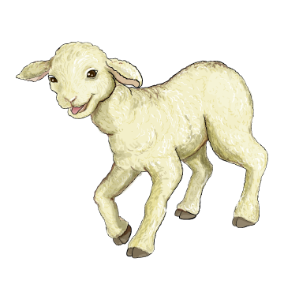
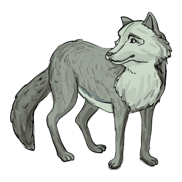

A hazug pász-tor-fi-ú
 A pász-tor-fi-ú az erdő mellett le-gel-tet-te a juhait. Ott dolgoztak a favágók is. A pajkos fiú ki-ta-lál-ta a tréfát. Elkezdett erősen or-dí-toz-ni:
– Jaj, a farkas! Jaj, segítség! Segítség!
A favágók o-da-fu-tot-tak. A fiú jót nevetett:
– Tré-fál-koz-tam, nem volt itt a farkas!

Másnap aztán igazán eljött az ordas farkas. A fiú újra se-gít-sé-gért ki-ál-to-zott. A favágók hallották, de nem mentek, mert azt hitték, megint tréfál a fiú.
A farkas sok juhot széttépett, a pásztorfiú is alig tudott el-sza-lad-ni. Ke-ser-ve-sen pa-nasz-ko-dott min-den-ki-nek. A válasz mindig ez volt:
– A hazugnak akkor sem hisznek, amikor igazat mond.